Antminer APW12 Power Supply Repair Guide
Version date: 2020.4.16
Contents: Mainly describes how to troubleshoot various faults of the power supply APW12 and how to use testtools for accurate troubleshooting.
※The copyright of this article is owned by Bitmain. Without the permission of the copyright owner, no unit orindividual may reprint or extract this work, or use this work for other purpose. Please contact Bitmain officialcustomer service if there is any need of reprinting or extracting.
I. Requirements for Maintenance Platform
1. Constant temperature soldering iron, above 80W (soldering temperature is 300-350℃), pointed soldering iron tip is used to solder small patches such as resistors and capacitors, etc., knife-type soldering iron tip is used for replacing plug-in component by welding (welding temperature is 380-420 ℃).
2. The heat gun is used for chip disassembly and soldering. Be careful not to heat it for a long time to avoid PCB blistering (welding temperature is 260 ℃±2 ℃).
3. AC controllable power supply voltage regulator (output 200-250V, limit current 0-20A) is used for APW12 power-on inspection. If it's not available, operator can also connect a 100W ordinary light bulb to the utility AC live wire, but shall pay attention to safety.
4. Electronic load (power 3.6KW, suitable voltage 0-50V); if it's not available, operator can make a power resistance load matching APW12.
5. Fluke 15b+ Multimeter, suction pistol, tweezers, zj0001000001 or V9 1.2 hashboard testers and special power supply test card firmware (configure an oscilloscope if available).
6. Flux, lead-free solder wire, water for cleaning panel with anhydrous alcohol; water for cleaning panel is used to clean up the residue and appearance of the flux after maintenance.
7. Thermally conductive silicone grease (2500) is used to repair the heat conduction between the MOS and the heat sinks. The thermally conductive silicone (704 silicone) is used to fix the cover after the original glue of the PCBA component is damaged after repair.
II. Requirements for Maintenance Operations
1. Maintenance personnel must have certain electronic knowledge, more than one year of maintenance experience, have a certain understanding on the working principle of switching power supply, and master the welding technologies.
2. Before opening the shell and repairing the PCBA board, the large capacitor must be discharged. After the voltage is measured with a multimeter (if it's less than 5V, discharge is completed), the welding operation can be performed! Please pay attention to confirm to avoid electric shocks.
3. Pay attention to the operation methods when judging circuit components. After replacing any device, there shall be no obvious deformation of the PCB board. The soldering of the bonding pad is reliable. Check the replacement parts and confirm whether there are few open and short circuits around them.
4. After the replacement of the key components, the main circuit is checked and measured to have no short circuit and other obvious abnormalities before the AC voltage test, otherwise there may be a hidden danger of miner explosion.
5. When AC220V voltage is needed to judge the circuit signal, please pay attention to operation protection. The following contents: Notes, key internal slogans
● The qualification of maintenance personnel must meet the specified requirements.
● The instruments and equipment used for maintenance must meet the specified requirements.
● The repaired instruments and equipment must be effectively grounded, and the maintenance environment requirements should meet anti-static requirements. Of course, it is better to wear an anti-static wrist strap.
● The materials used for maintenance must meet the specified requirements; in order to ensure the accuracy and traceability of the materials used for maintenance, the materials used for maintenance must be the production materials of the corresponding models, and the requirements for material replacement must be confirmed;
1. In order to prevent possible electric shock hazards, non-professionals are not allowed to disassemble the shell;
2. The maintenance personnel need to use a special shelling miner to repair the power adapter, so as not to damage the internal components of the product;
3. After the product is opened, it is required to discharge the high-voltage capacitor;
4. Electronic waste generated during product maintenance cannot be discarded at will;
5. Defective products must be marked on the repair process card and placed in a partition;
6. The repaired products must be marked to distinguish;
7. The repaired products must be placed in the repaired area and require systematic testing before they can be put into storage.
III. Principle and Structure of Power Supply
1. Overview of principles
1.1 APW12 is composed of a large board, three 60mm fans and a lower shell. Normally, two inputs are connected to AC220V. It has two DC output voltages, respectively including SB, 12V. The main voltage output 12V-15V is controlled by PIC port and miner communication.
1.2 The performance characteristics and scope of use are described as follows:
APW12 power supply is a high-efficiency DC power supply designed and produced by our company. It has two single-phase AC inputs and two DC outputs:
1) 12V-15V voltage output is adjustable, the maximum current can reach 12V/300A; 15V/240A
2) 12V voltage fixed output; current can reach 15A.
The adjustable voltage output part can meet the use of common DC loads within 240A current within the adjustable voltage range, especially is suitable for servers and miners that have strict power requirements; the 12V voltage fixed output part can meet the control board and cooling fan use.
1.21 Following characteristics:
It has the following characteristics:
♦ 200-240V wide voltage input
♦ There are under-voltage, short-circuit, overload, over-temperature protection inside, and it can automatically recover after the fault is removed.
♦ The selection of high-quality components ensures the stability and reliability of the product through reasonable design, and can work at full load for a long time in a high temperature environment within 50°C.
♦ Small size and high power density.
1.3 Introduction to the appearance of APW12 power supply
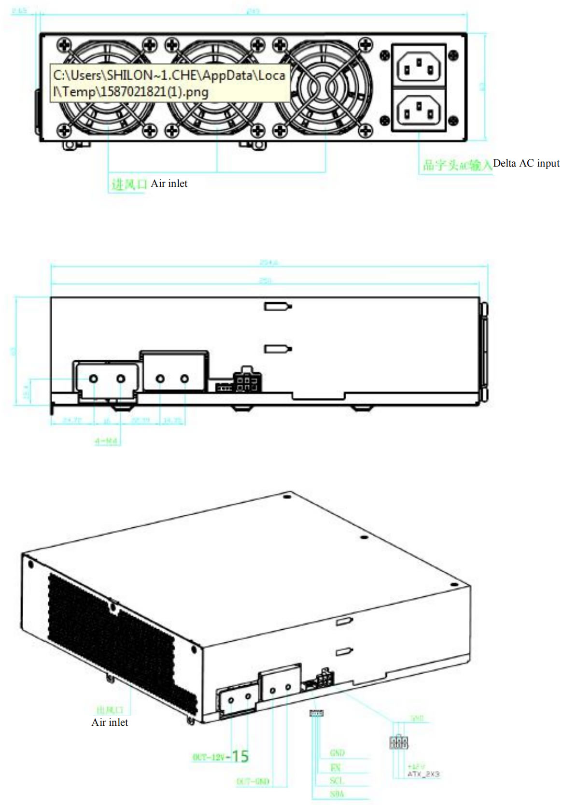
Note: If you need to test the default voltage of 15.2V at boot, please use an adapter cable to short-circuit the pin EN of the voltage regulator port with GND.
The following is APW12 shell and output port diagram
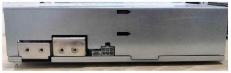
● Distribution on the front panel of the power supply: 2 delta-shaped AC input ports
3 medium-speed fans with a size of 60*60*25mm
● Distribution on the left side of the power supply: 2 PCB-33 copper solder terminals with adjustable voltage output
One 4Pin signal terminal
One PCIE terminal with 12 V fixed voltage output
● Distribution on the rear panel of the power supply: the heat dissipation, acting as the fan vents.
● The AC input terminal on the front panel of the power supply is C14 delta-shaped AC socket which is snap-in type, and the C13 AC input cable of the corresponding interface is required for use.
● The 4Pin signal terminal is the communication interface between the external control board and the power supply. SDA/SCL is the I2C protocol, and the output voltage of the power supply can be adjusted through I2C. EN is the enable signal of the power supply, and the control board can enable the power supply through EN, which is effective at low level.
● The adjustable voltage output part adopts 2 copper strip welding terminals, one copper strip terminal near the air outlet is the output positive pole, and the other one near the signal terminal is the output negative pole. The output wire or output copper strip can be fixed by M4 screws on the terminal. It is convenient and flexible to use.
● The 12V fixed voltage output part adopts PCIE output terminals. The schematic diagram of the PCIE output terminal is as follows:
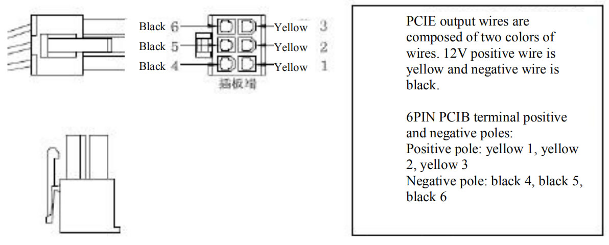
1.4 APW12 power supply parameter table:
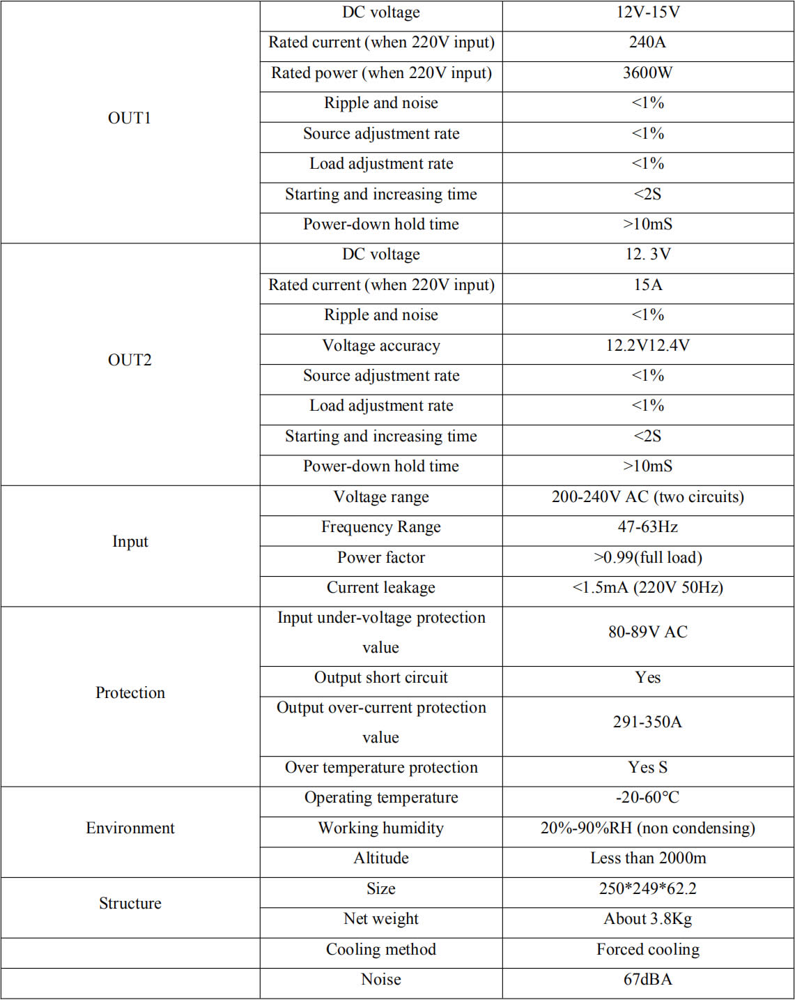
2. Maintenance ideas and cases of common faults
2.1. Block diagram of power supply basic principle
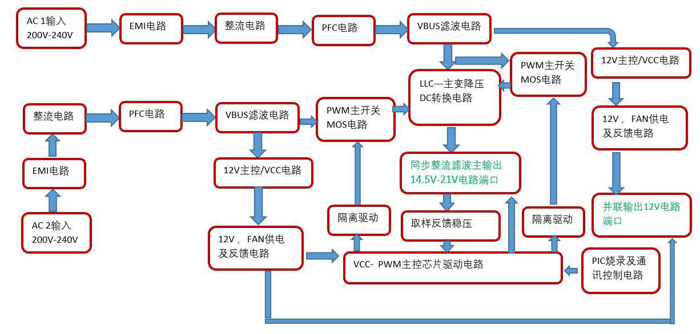
2.2 Power PCBA board layout
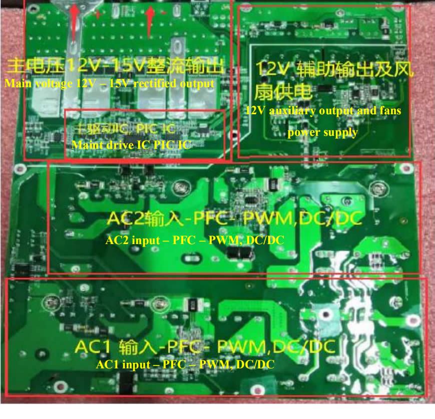
Layout marking instructions:
AC1 ---the first circuit AC input and EMI circuit, - PFC and main switch MOS circuit, --- 12V auxiliary and VCC circuit.
AC2 ---the second circuit AC input and EMI circuit, --- PFC and main switch MOS circuit, --- 12V auxiliary and VCC circuit, --12V output port and PIC communication port
Main drive IC, PIC control chip --- Main output
This figure is an actual picture. There may be small differences between different product versions, but the principle is similar.
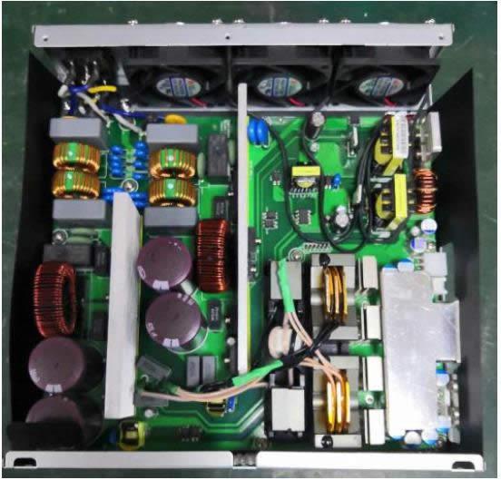
2.21 Schematic diagram of two AC input EMI to PFC circuit, for example, for AC1 circuit, focus on measuring F1 safety circuit MOV1; for U2 rectifier bridge, confirm whether Q4, D7, D5, D6 are damaged (the same inspection method as the other circuit). Note that when the MOS is damaged, the drive resistance and circuit may be damaged simultaneously and need to be replaced. During normal operation, it can be judged that the DC voltage across the large capacitor is 410-420V.
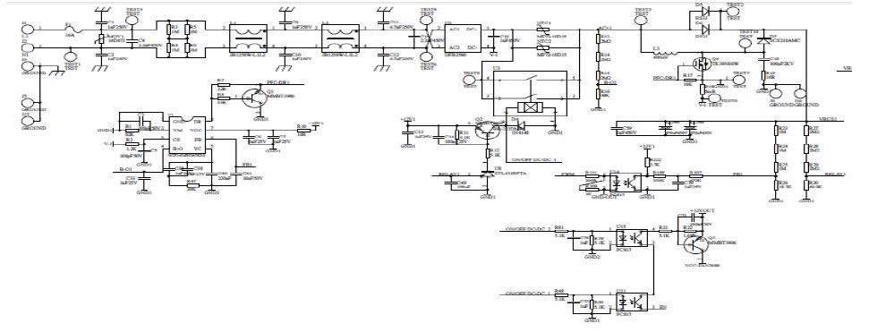
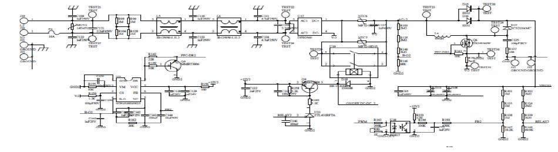
2.22 Two-circuit 12V auxiliary circuit and fan power supply principle:
For VCC 12V circuit, the power supply judges that there is no short circuit abnormality. After powering on, this circuit needs to work normally to supply power to other ICs. Measure TEST15/TEST11 (11.98V-12.3V), TEST7/TEST13 (11.98V- 12.3V), and in case of any abnormal situations, check D12; D10; U7; D2; T1; etc.
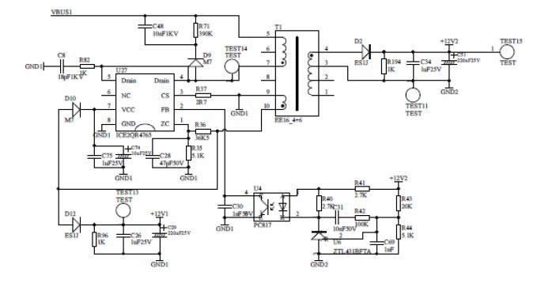
12V auxiliary circuit and fan power supply, 12V output for miner supply control board and large fan, VBUS1 or VBUS2 voltage 420V, U5 chip 2 pin high level starting, if there is abnormal check, Q7; R66, R145, F4, R121 — Q10; R59; U10; check if F3 has any damage.
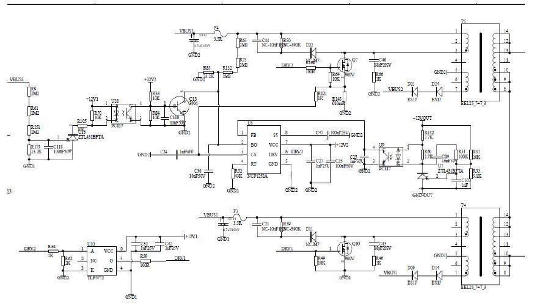
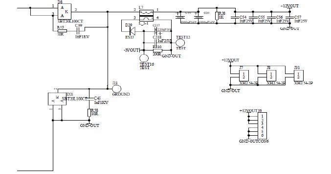
12V 0UTJ6 output for miner control board, J7, J8, J31 internal fan
For main PWM chip U9 VCC power supply control, pay attention to the front-end two PFC need to work normally.
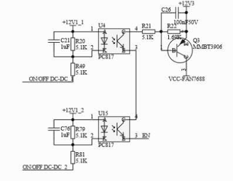
2.23 Main control U22 PWM drive circuit, feedback control voltage regulation and voltage stabilization principle diagram, focusing on measuring the main IC U22 VCC power supply and drive photocoupling; resistance and transistor.
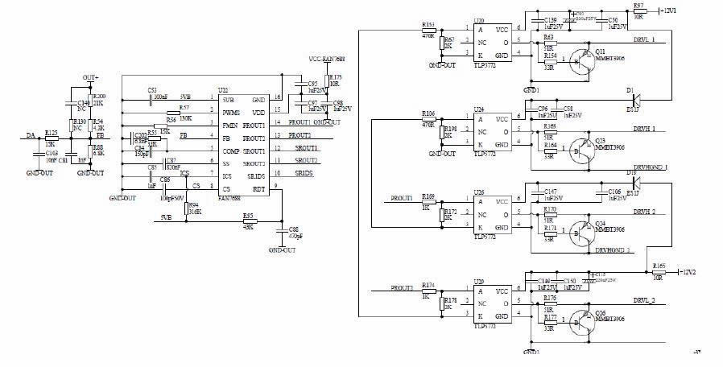
2.24 LLC circuit two-circuit main switch MOS and transformer conversion voltage-reduction synchronous rectification DC filter output circuit, focusing on testing the main switch MOS Q14, Q15, Q31, Q32, check whether there is a short circuit phenomenon at the positive and negative pole of the output rectifier chip MOS, over-current protection circuit T2, T8 transformer, etc.
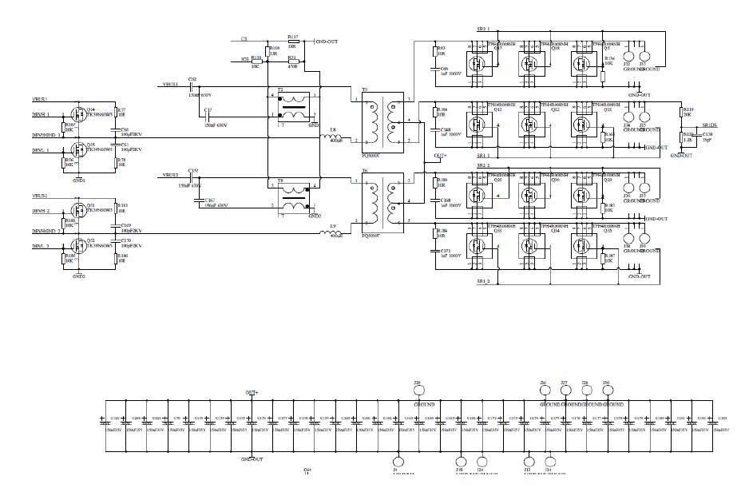
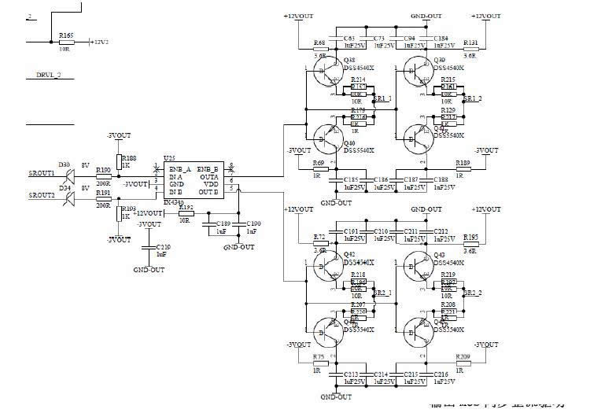
2.25 For PIC control circuit, J15 voltage regulation communication port, J16 programming port, check TEST19- GND, TEST18-GND (3.2-3.3V)
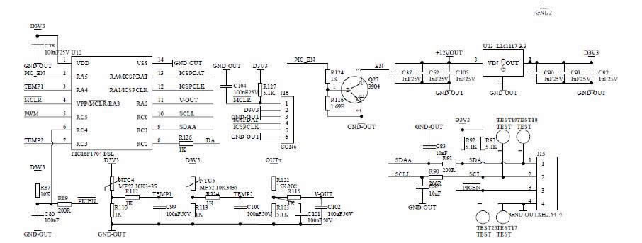
2.26 SMD paster A side and plug-in B side device position screen printing diagram
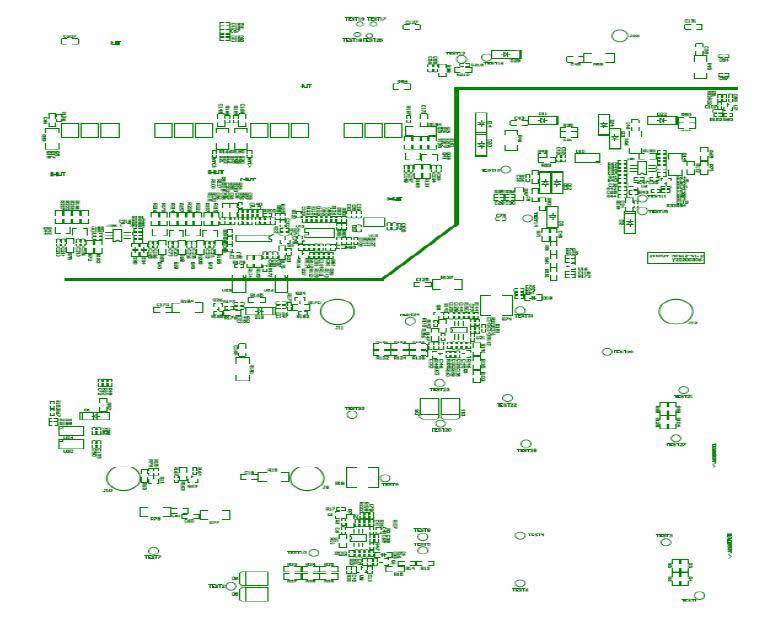
Figure 1: SMD paster surface position
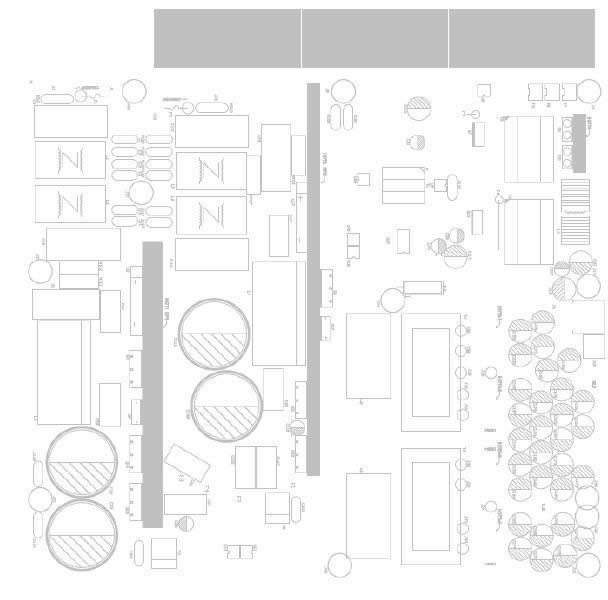
Figure 2: Plug-in surface position
2.3 Maintenance process
2.31 Check whether the appearance of the power supply is seriously damaged or deformed, and whether the DC fan and AC outlet are damaged.
2.32 Power on AC220V and check whether the fan is rotating normally. Use a multimeter to measures and check whether the output voltage of the J6 terminal is 12V (12.1V-12.50).
2.33 Open the shell and check the components and soldering surface for sparking and scorching (focus on whether D1, D2, D21 and D22 are damaged, and whether 12V circuit chip capacitors are burning), use a multimeter to detect whether the AC input F1 fuse is open circuit, check U2 rectifier bridge and PFC MOS Q4; D7; D5; D6 to confirm whether there is short circuit (the same inspection method as the other circuit), measure the main switch of PWM circuit MOS Q31; Q32; Q15; Q16 and output chip MOS Q17; Q18; Q19; Q20; check whether there is a short circuit. If there is a short circuit, operator needs to check and replace the component position. Pay attention to the circuit resistance around the bad bit MOS tube; the transistor may be damaged and need to be replaced.
2.34 Check whether the auxiliary 12V circuit F3, U5; T1; Q5; D8, D9 and other components have short circuit or open circuit phenomenon and whether the surrounding components are burned, etc., if necessary, replace them.
2.35 If there is no abnormality in the above position, the F1 or F2 fuse circuit is normal, and the DC fan rotates after the two AC circuits are powered on (if it doesn't rotate, please measure whether the fan socket is 12V; if it rotates normally, the fan shall be replaced normally), the output J6 is under 12V voltage. Measure and check whether there are DC410V-420V between the two ends of the two PFC large capacitance TEST20-TEST30 or TEST2-TEST7 measurement points, otherwise check the PFC chip U21 or U1, check the 7-pin VCC power supply has 12V or judge the material to be damaged and replace; if there is no abnormality, the PWM needs to be detected for circuit U9; U10; U24; power supply VCC has a voltage of 12V or judge that the material is damaged and replaced, and whether the T5 or T7 drive transformer is damaged.
2.36 Other defects need to be further analyzed and judged according to the skills of the maintenance personnel. After the above inspections are completed, the main DC output of the single power supply test needs to be about DC21.3V after short-circuiting the J15 PIN pin 4-5 pins, as shown in the EN-GND pin. Note that the short circuit error may damage the chip. Only after the replacement of the defective device is checked and the welding is correct, the AC220V test can be performed. Note: If other circuits are checked that the normal large capacitor is 420V, and there is no output after short-circuiting, it can also be judged that the PIC chip U12 firmware is reprogrammed or the IC is burned (generally there are fewer defects)
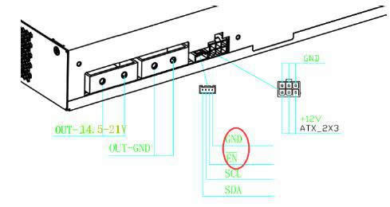
2.4 Available control board V1.2 and APW9 power PIC port connection test chart. Mark 1 is dedicated card test firmware, 2 is DC voltage debugging high and low conversion button, 3 is PIC communication port, 4 is control board letter socket, 5 is 12V power supply; please note that the yellow indicates positive and black indicates negative. Note: After the general power supply defective products are repaired, power on and short-circuit the PIC communication J15 port EN-GND pin, if there is a voltage output of about 21V as normal, it can be judged as normal and the control board test is not required (when the PIC microcontroller is broken, or the firmware is reprogrammed, then a small board test is required), and the corresponding miner can be directly installed for testing. After the power supply is repaired, if the current under 12V with a load is 12A and current under the main voltage DC21V with a load is 170A, it is qualified.
2.5 Simple judgment and maintenance of common faults in mine power supply.
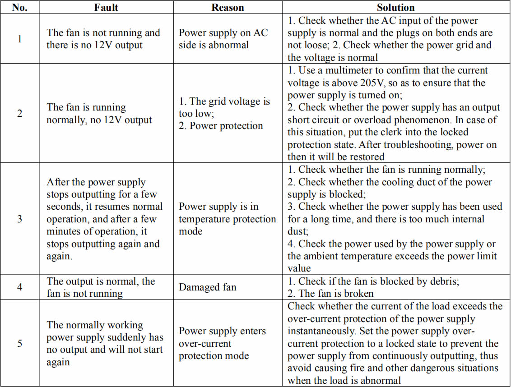
2.6 After the maintenance test of the whole power supply is normal, it needs to operate for aging under more than 80% (140AA) of the rated load for 2 hours, and if it's qualified, it can be used by the customers.